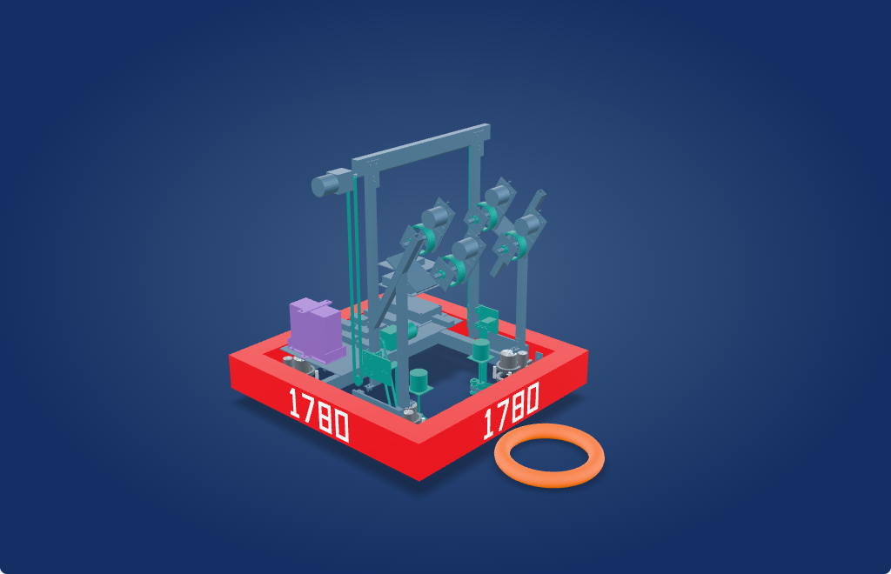

2024 / CRESCENDO
Floor to
Speaker.
A theoretical 2024 robot for drive-over pickup and close-range Speaker scoring. On development start D1, the nominal R7 collected six distinct floor NOTES. The sixth reached the shared Speaker counter at 117.756 seconds.

Reopened R7 Fusion assembly · Four installed MAXSwerve modules with simplified housings, motors and wheel carriers
Download student R7 for Fusion · Open and drive its ten joints
Follow the first D1 NOTE from the floor to both modeled Speaker sensors at 12.915 s. The earlier articulated chassis produced the motion. R7 displays the same 188 moving solids. The lines show the registered opening and sensor locations.
ROBOT / TECHNICAL DATA
Build sheet
| Subsystem | Modeled configuration | Evidence |
|---|---|---|
| Drivetrain | Six-wheel baseline with differential drive and two CIM motor models per side. Track width 580 mm, wheel diameter 152.4 mm, reduction 10.71∶1. | Drive parameters |
| Swerve conversion | Four REV 3-inch MAXSwerve modules, each with a NEO drive motor and NEO 550 steering motor. Wheel centers form a 520 × 520 mm square. All eight native joints passed independent motion checks. The intake and cradle clear the module envelopes by at least 4.82 mm through the modeled lift and pitch range. In simulation the loaded robot strafed, turned and lifted together for 2.65 s. The first NOTE reached the shooting pose at 9.895 s and 10.055 s on mirrored starts. The native frame has three perimeter rails, twelve through-bolts and four supports for the electronics beams. Two stepped webs connect the lift bridges to the side rails and clear the moving mechanism by at least 36.65 mm. All eight bumper mounts clear their service tools. The boxed front crossmember has an estimated 0.91 mm deflection under a 1 kN center load. The NOTE clears the bumper by at least 3.63 mm on both sampled pickup routes. In the measured starting pose, the lift motor extends 71.25 mm beyond the frame outline. Upper packaging, harness routing and release repeatability remain open. | Native layout record · Frame build sheet · Measured pickup and carry |
| Intake | Drive-over floor acquisition. Opposed powered surfaces seat the NOTE and retain it while the robot brakes. | Acquisition model |
| Lift & pitch | Target carriage travel 449.4 mm and pitch 60°. The lift carries the retained piece while driving and turning. | Mechanism targets |
| Launcher | Two pinch motors feed four simulated launcher wheels. Final approach uses a 3,800 rpm target and a 0.225 pinch duty fraction. | Shot settings |
| Scoring | The same NOTE must clear the opening and cover both Speaker sensor pairs. Each earlier NOTE must clear the counter before the next release. | Verification record |
Native Fusion geometry underlies the mechanism checks. The narrowest nominal rigid clearance was 0.0142 mm. The model uses assumed material response. Its scoring results describe simulated runs.
SIMULATION / TELEMETRY
Evidence films
These six-wheel baseline films plot recorded robot and NOTE positions. The slow-motion film follows the final NOTE’s height through release, the opening and sensor registration.
CAMPAIGN / 2024
Repeatability
The target is six close-range scores within 120 simulated seconds on at least 19 of 20 varied starts.
The nominal R7 reached both sensor pairs six times on one development start. The sixth event came at 117.756 s against a 120 s deadline. The field solver retained every earlier NOTE. The robot cleared the modeled field and waiting supply, including the Stage foot on the inner-wing trip. The 20 formal evaluation starts remain available. Inspect all six pickups, counter times and limits ↗